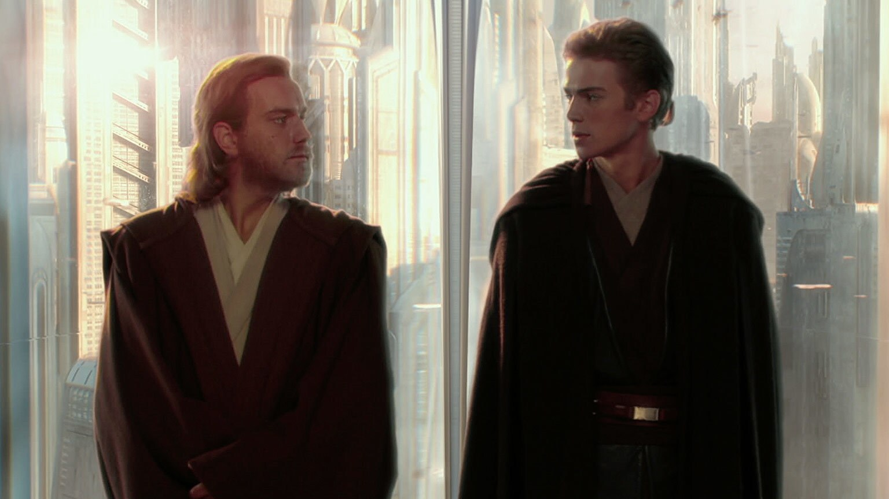
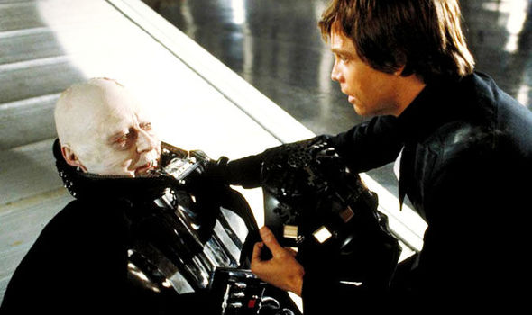
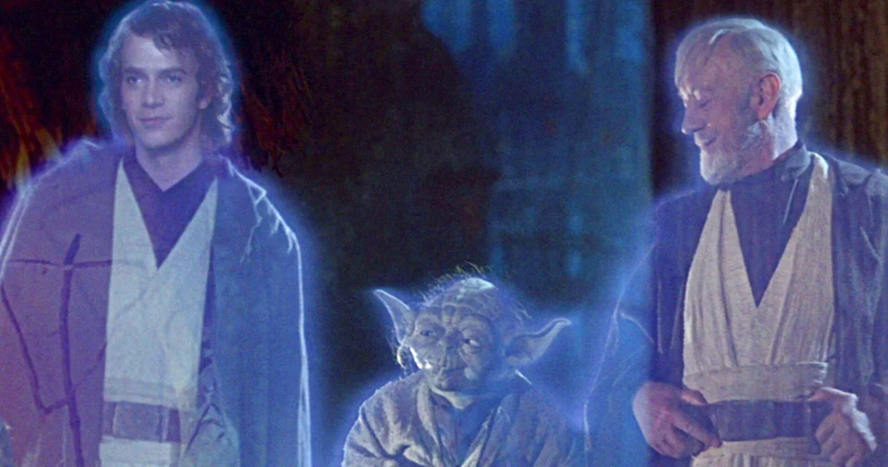

15 de Maio de 2023
Show me the code
A nossa jornada já iniciou com um upgrade de desenvolvimento pessoal, nada melhor do que aprimorar nossas
Habilidades
Comportamentais antes de virar um Jedi dos Códigos.
Nosso objetivo foi criar a estrutura de uma página utilizando HTML e CSS, e o HTML foi nosso primeiro aliado.
Também
utilizamos um protótipo do Figma desenvolvido pela Rocketseat, usando-o como referência visual para desenvolver
a nossa
página (ninguém solta a mão de ninguém).
Após preparar o ambiente de desenvolvimento, começamos o tão inesperado CODAR.
Foram abordados: HTML (características: Hypertext, Markup, Sintaxe de uma tag, Atributos); Snippets para gerar a
estrutura HTML; Tags: div, small, h1, img, p; Assests importados para o projeto.
Características de um Dev Padawan: Curiosidade, foco, prática, participar da comunidade.
16 de Maio de 2023
Build the future

Não basta só ter uma página, ela tem que ficar bonita, né? Aqui começamos a usar o CSS, nosso criador de
estilos.
Foram abordados: CSS (características: Estilo em cascata, Especificidades, Seletores, Tipos de Seletores, Box
Model
(caixas e suas propriedades); Conectando HTML com o CSS; Resetando Margin e Pading, Box-sizing; Flexbox;
Aplicando
fontes customizadas; Utilizando link (abrir link em nova guia).
Características de um Dev Padawan: Não desistir, pesquisar, buscar ajuda e ajudar.
17 de Maio de 2023
Never stop learning

Chegamos na metade do caminho, nossa jornada aqui está quase acabando, mas ainda temos alguns ensinamentos para
aprender.
Utilizamos o Grid Layout para dividir o layout do nosso site como se fosse uma tabela, ele possui linhas e
colunas.
Foram abordados: Grid Layout (aplicado no body) ; Importando background e logo; Adicionando foto e nome do
usuário;
Tags: img, h1, p e spam; Habilitamos o scroll apenas em um lado da página.
Características de um Dev Padawan: Comprometimento, dominar fundamentos, saber se posicionar profissionalmente.
18 de Maio de 2023
Next level week

Aprendemos a utilizar o seletor de Webkit, que permite renderizar e modificar elementos do navegador.
Customizamos o
scrollbar da nossa página.
Criamos animações com efeito de hover na imagem, que serve para executar o visual que nós definimos dentro dele
quando o
cursor do mouse estiver em cima do elemento.
Aprendemos animações com Keyframes, ferramenta que controla as etapas em uma sequência de animação CSS,
definindo
estilos para quadro-chaves. Criamos uma animação de entrada, aplicando no aside e na nav.
Deixamos nossa página responsiva, utilizando a regra de mídia (media query), reduzindo o tamanho da fonte,
modificando o
layout do grid no body, modificando o aside e removendo o scroll somente da nav.
Foram abordados: Webkit; Hover; Keyframes; Layout responsivo (com media query).
Características de um Dev Padawan: Ter hard skills, mas principalmente soft skills.